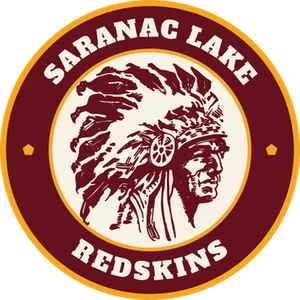

From the archive
Vintage team posters
Every team photo we are free to reprint, plus the Redskins badge and chief mark. Printed on heavyweight matte paper with a white border, framed or unframed. 100% of proceeds to your chosen cause.
All posters
 The 1925 RedskinsPrice TBD
The 1925 RedskinsPrice TBD The 1927 SquadPrice TBD
The 1927 SquadPrice TBD The Football Squad, 1927Price TBD
The Football Squad, 1927Price TBD The 1929 SquadPrice TBD
The 1929 SquadPrice TBD
The Redskins BadgePrice TBD The Chief MarkPrice TBD
The Chief MarkPrice TBD
Why some favorite photos aren't here yet
Yearbook photos published before 1931 are in the public domain, so we can print them. Later photos on the Historic Saranac Lake Wiki and in the Adirondack Daily Enterprise may still be under copyright. We are asking for permission before offering:
- 1932 and 1937 team photos (1933 and 1938 Canaras)
- 1944 team photo and 1948 'Football Opening' clipping (Adirondack Daily Enterprise)
- 1958 varsity, Homecoming, band and cheerleading photos (1958 Canaras)
- Coach Ken Wilson portrait; 1987 Hall of Fame inductees and reunion photos
- Individual 1932 Canaras player portraits and later player photos
Have an original print or a high-resolution scan you'd share? Contact us. Higher-resolution scans also unlock larger poster sizes.